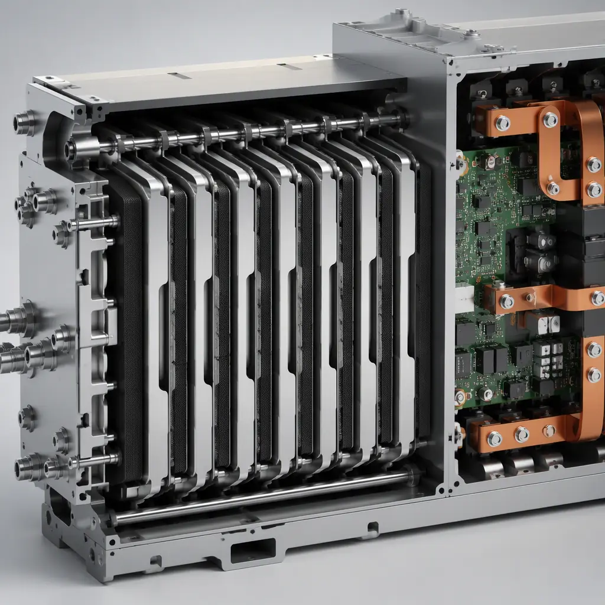
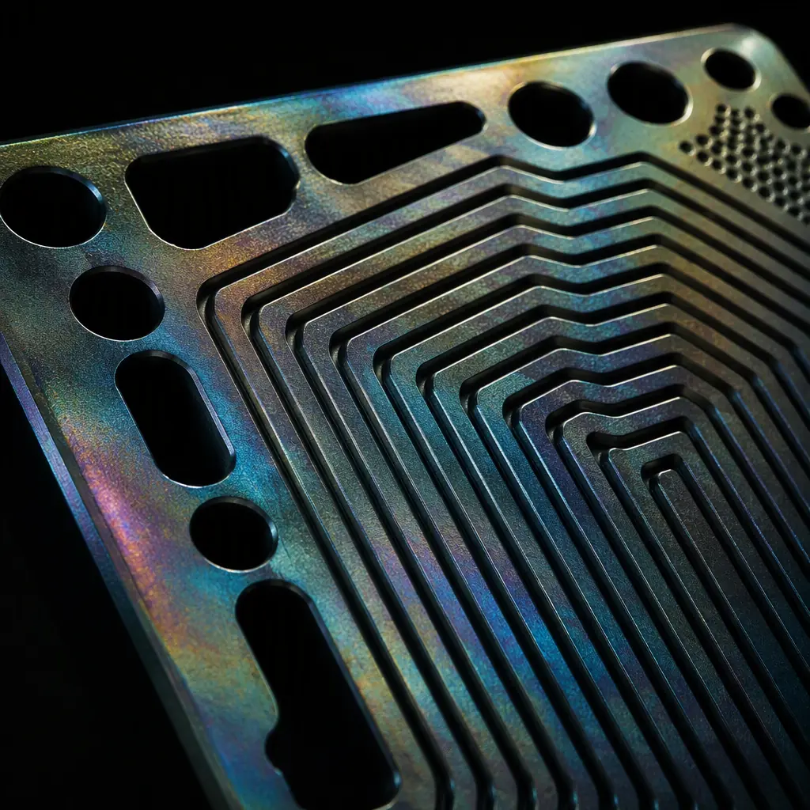
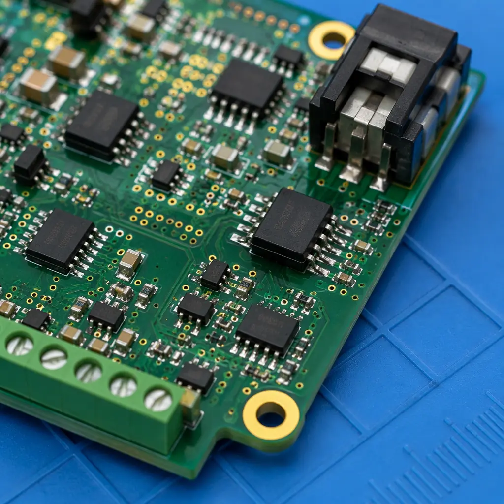

The global green hydrogen market is projected to exceed $100 billion by 2030, driven by electrolyzer deployments scaling from megawatts to gigawatts. Behind every PEM electrolyzer stack and hydrogen fuel cell system is a suite of power electronics — DC-DC converters handling hundreds of amps, precision cell voltage monitoring across dozens of series-connected cells, and control boards operating in humid, hydrogen-rich environments. These PCBs face a unique combination of electrical, thermal, and environmental challenges that standard industrial electronics don't encounter.
At Huaxing PCBA, our 8 SMT lines and heavy-copper PCB capability (up to 6oz copper weight) position us to support hydrogen equipment manufacturers scaling from pilot production to volume deployment. This guide maps the PCB requirements across the hydrogen value chain — from electrolyzer power stacks to fuel cell monitoring — and provides procurement specifications you can use in your next RFQ. For broader new energy applications, see our new energy PCB manufacturing overview.

The PCB Demands of Hydrogen Systems: Three Domains, Three Challenges
Hydrogen power electronics span three distinct domains, each with different PCB requirements. Understanding which domain your design falls into is the first step toward specifying the right board.
Electrolyzer Power Supply: High-Current DC at Industrial Scale
PEM electrolyzers operate at low voltage (1.8–2.2V per cell, 50–200V per stack) but high current (500A–5,000A per stack). The rectifier and DC-DC converter PCBs that drive these stacks need heavy copper layers (4oz–6oz), wide traces, and often bus bar integration. Thermal management is critical — I²R losses at 1,000A can produce 50–200W of heat on the PCB alone. For high-current design fundamentals, see our heavy copper PCB guide and copper weight selection guide.
Cell Voltage Monitoring (CVM): Precision Analog in a Noisy Environment
A fuel cell stack with 200–400 cells requires per-cell voltage monitoring with ±5mV accuracy — while sitting centimeters away from switching converters generating substantial EMI. CVM boards must combine high-impedance analog front-ends, isolated communication (CAN or RS-485), and robust grounding strategies. The PCB must handle common-mode voltages that can reach 400V+ across the cell string. Our high-voltage PCB design guide and EMC/EMI compliance guide cover the isolation and noise mitigation strategies.
System Control and Balance-of-Plant: Environmental Hardening
The hydrogen environment introduces corrosion risks not present in standard electronics. Trace amounts of hydrogen peroxide can form in PEM systems, creating a mildly oxidizing atmosphere. PCB surface finishes must resist degradation — ENIG or immersion silver are preferred over HASL, which can develop surface oxidation. Conformal coating is strongly recommended for any board near the stack enclosure. For coating selection, consult our conformal coating guide and surface finish selection guide.
Key Takeaway: Hydrogen power electronics span three domains — high current (electrolyzer power), precision analog (CVM), and environmental hardening (control). A single PCB rarely covers all three. Design separate boards optimized for each domain rather than compromising with a unified design.

Electrolyzer Power Electronics: Where PCB Meets Power Conversion
The electrolyzer power supply chain — AC grid → rectifier → DC bus → DC-DC converter → electrolyzer stack — involves multiple PCB assemblies, each with distinct requirements. The DC-DC converter stage is the most PCB-intensive and the most demanding.
High-Current DC-DC Converter Topologies
Electrolyzer DC-DC converters typically use interleaved buck or full-bridge topologies operating at 20–100 kHz. At these frequencies and current levels, PCB layout directly determines efficiency. Key requirements: 4–6oz copper on power layers, 10mm+ trace widths for 100A+ paths, and Kelvin-sensing traces for accurate current measurement. IGBT or SiC MOSFET gate drive loops must be under 20mm circumference to minimize parasitic inductance. For power stage layout strategies, see our power electronics PCB design guide.
Thermal Management for Continuous Operation
Unlike EV chargers that operate intermittently, electrolyzer power supplies run 24/7 at near-rated load during production campaigns. This continuous duty cycle means thermal design must target steady-state temperatures, not peak transient. Metal-core PCBs (aluminum or copper base) are common for the power stage, with thermal vias under each power semiconductor. Expected power dissipation: 1–3% of throughput power — at 500kW electrolyzer input, that's 5–15kW of heat to manage across the power electronics enclosure. Our metal core PCB guide covers thermal substrate selection.
Safety Isolation: Reinforced vs Basic Insulation
Electrolyzer stacks float at the DC bus potential — typically 200–800V DC. Any PCB that bridges the primary (grid) and secondary (stack) sides must provide reinforced isolation rated for the working voltage plus transient overvoltages. Creepage distances per IEC 60664-1 for 800V DC in pollution degree 2 environments require 8mm+ spacing — a constraint that often necessitates wider board outlines or slot cuts in the PCB. See our high-voltage design guide for creepage and clearance calculations.
Fuel Cell Stack Monitoring: Precision Measurement at Scale
Fuel cell systems — whether for stationary power, heavy transport, or marine applications — require real-time monitoring of every individual cell in the stack. A commercial fuel cell stack may contain 200–400 cells in series, each needing voltage, temperature, and sometimes impedance measurement.
Cell Voltage Monitoring Architecture
CVM systems typically use multiplexed ADC architectures, scanning each cell sequentially at 1–10ms per measurement. The PCB must handle input voltages that range from 0V (near shorted cell) to 1.2V (open circuit) with ±5mV accuracy — requiring precision resistor dividers or dedicated cell-monitoring ASICs (e.g., Linear Technology LTC680x family). The challenge is common-mode: cell #200 sits at ~200V above ground. Our mixed-signal PCB design guide covers the grounding and partitioning strategies that prevent common-mode errors.
Galvanic Isolation and Communication
CVM data must cross the isolation barrier between the high-voltage stack and the low-voltage system controller. Isolated CAN or SPI interfaces using digital isolators (TI ISO774x, ADI ADuM series) are standard. The PCB must maintain the isolation barrier in layout: 8mm+ creepage between high-side and low-side domains, with no copper pours bridging the gap. Slot cuts in the PCB are often used to guarantee creepage distance mechanically. Our EMI design guide covers managing the noise that high dv/dt switching couples across the isolation barrier.
Impedance Spectroscopy for Cell Health
Advanced BMS designs add electrochemical impedance spectroscopy (EIS) — injecting a small AC current (1–10A at 1–10kHz) and measuring the voltage response to detect membrane degradation before it causes failure. This requires a precision AC current source and synchronous detection on the PCB — essentially a lock-in amplifier per cell group. The PCB must maintain 0.1% gain accuracy across the measurement chain. This level of precision demands careful component selection and layout — see our laboratory instrument PCB guide for relevant low-noise design techniques.

Material Selection for Hydrogen Environment PCBs
The hydrogen-rich, potentially humid environment inside a fuel cell enclosure places specific demands on PCB materials that generic FR-4 may not satisfy:
Substrate: High-Tg FR-4 Minimum, Polyimide for Extended Life
Operating temperatures near the stack can reach 80–105°C continuously. Standard FR-4 (Tg 130°C) is marginal; high-Tg FR-4 (Tg 170–180°C) is the minimum recommendation. For systems targeting 40,000+ hour service life (stationary power), polyimide substrates provide superior thermal stability and lower moisture absorption — critical since moisture accelerates CAF (conductive anodic filament) growth in the presence of DC voltage bias. Our laminate selection guide compares substrate options across all performance dimensions.
Surface Finish: ENIG Preferred, Avoid HASL and Immersion Tin
The mildly oxidizing atmosphere (trace H₂O₂) in PEM systems attacks exposed copper and tin-based finishes. ENIG (electroless nickel immersion gold) provides a noble metal barrier that resists oxidation. Hard gold is specified for edge connectors that may see insertion cycles during stack maintenance. Immersion tin and HASL are not recommended — tin whisker risk increases in humid environments with thermal cycling. Our surface finish selection guide covers the full comparison.
Conformal Coating: Acrylic or Silicone for Moisture and Corrosion Protection
Any PCB inside the stack enclosure or within 1 meter of hydrogen plumbing should receive conformal coating. Acrylic coatings (AR, ER types per IPC-CC-830) provide good moisture resistance and are reworkable. Silicone coatings (SR type) offer better high-temperature performance and flexibility but are difficult to remove for rework. Apply after all SMT assembly and test — coating over untested boards hides defects. Our conformal coating guide details application methods and IPC standards.
Procurement Specifications for Hydrogen System PCBs
When issuing RFQs for hydrogen power electronics PCBs, include these specification points beyond standard fabrication requirements:
| Specification | Electrolyzer Power Board | CVM Board | System Controller |
|---|---|---|---|
| Copper weight (outer) | 4–6oz | 1–2oz | 1–2oz |
| Copper weight (inner) | 3–4oz | 1oz | 1oz |
| Min substrate Tg | 170°C | 150°C | 150°C |
| Surface finish | ENIG (0.05µm Au) | ENIG (0.05µm Au) | ENIG or OSP |
| Conformal coating | Required (silicone) | Required (acrylic) | Optional |
| Creepage (pri-sec) | 8mm+ | 8mm+ | n/a |
| IPC class | Class 2 minimum | Class 2 minimum | Class 2 |
| Thermal vias | Required under all power FETs | Not required | Not required |
For volume production, specify an IPC Class 3 option for the CVM board if your system targets automotive (ISO 26262) or stationary power applications with required uptime guarantees. The incremental cost is typically 15–25% above Class 2. See our IPC Class 2 vs Class 3 comparison for when the upgrade is justified.
Scaling from Prototype to Production: PCB Supply Chain for Hydrogen
Hydrogen equipment manufacturers face a PCB supply chain challenge: prototype volumes are small (10–100 units) but production volumes can scale rapidly as electrolyzer capacity targets increase. A PCB supplier that handles both low-volume NPI builds and high-volume production — without requiring requalification between runs — reduces scaling friction significantly.
At Huaxing PCBA, we support hydrogen system developers through the full scaling curve: quick-turn prototypes with 5–7 day lead times for design validation, then seamless transition to volume production across our 8 SMT lines. Our low-volume assembly guide covers the NPI phase, and our quick-turn manufacturing guide details how we accelerate prototype delivery without sacrificing DFM review quality.
Procurement Tip: When sourcing PCBs for hydrogen systems, include hydrogen embrittlement testing requirements in your RFQ for any copper bus bars or press-fit connectors. Standard copper plating processes can introduce hydrogen into the copper lattice, causing embrittlement over time. Specify baking at 190°C for 4+ hours post-plating per ASTM B849 to drive out absorbed hydrogen.
Summary: PCBs Are the Quiet Enabler of the Hydrogen Economy
While electrolyzer membranes and fuel cell catalysts capture the headlines, the power electronics PCBs that drive, monitor, and control these systems are equally critical to system efficiency and reliability. The specific demands — heavy copper for high current, precision analog for cell monitoring, environmental hardening for hydrogen-rich atmospheres — require PCB suppliers who understand the application, not just the fabrication process.
At Huaxing PCBA, we're actively supporting hydrogen equipment manufacturers with PCB assemblies that meet these requirements. From electrolyzer DC-DC converter boards with 6oz copper and silicone conformal coating to precision CVM boards with isolated CAN communication, our engineering team can review your design for manufacturability before you commit to tooling. Explore our new energy PCB capabilities or send us your Gerber files for a 24-hour DFM review and quotation.